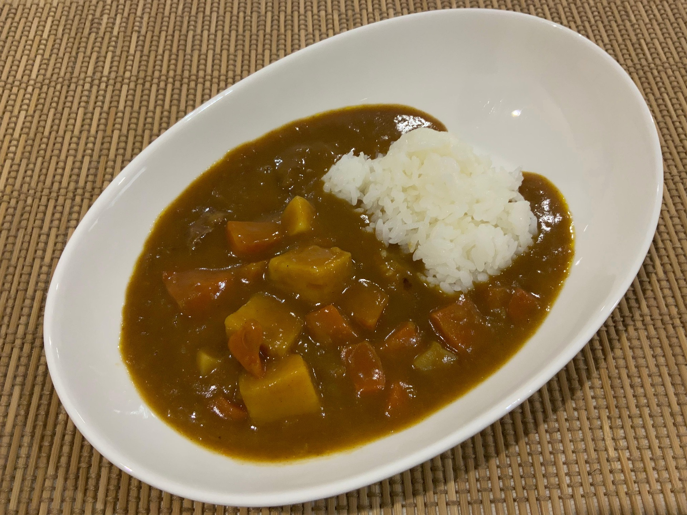

Amazing Spectacular Curry Rice!

Description
Eebs's Curry Rice is an excellent dish made best with chicken, potatoes, carrots, rice, and onions. Japanese don't add extra ingredients. Try this authentic recipe if you want to be just like Eebs!
Ingredients
- Chicken
- Carrots
- Potatoes
- Onion
- Rice
- Curry cube
- One big pot
- 800-ml water
Steps
- First stir-fry your carrots, potatoes and onions
- Add the chicken and fry this altogether for 2 more minutes.
- Add 800-ml water to the pot and bring to a boil
- Once its boiling, bring the heat down and let simmer for 15 minutes with a lid on top.
- Break the curry cube and turn the heat off. Mix this in until the cube has melted.
- Put the heat back on and simmer for a further 5 minutes to let the sauce thicken.
- Serve with hot rice and voila!
Home